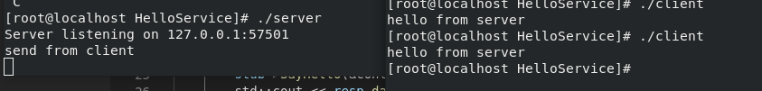

windows平台的编译
一.编译openssl
① 安装perl(可以使用ActivePerl)，执行perl Configure VC-WIN64A no-asm 。在这里解释一下参数含义，VC-WIN64A是指amd64也就是我们常用的x64，还要一个VC-WIN64I是安腾Itanium，目前没有使用，no-asm是不使用汇编。
② 执行ms\do_win64a.bat 。
③ 使用vs的x86_x64命令行工具执行nmake -f ms\ntdll.mak 生成动态库。
④ 使用vs的x86_x64命令行工具执行nmake -f ms\nt.mak 生成静态库，这步可以不用执行一般生成动态库即可。
备注：遇到过的常见问题，比如ml64、rc等命令不存在以及x86和x64，这都是没有使用vs的x84_x64命令行工具导致的。
二.编译zlib
zlib的编译非常简单，在contrib\vstudio选择任意一个文件夹然后生成全部即可。
备注：最好生成Release x64的，ReleaseWithoutAsm可能会有某些project生成失败，这是因为它们的lib使用的是Release的。
三.编译gRPC
① 将下载的好的cares、protobuf、gflags、benchmark源码放到third_party文件夹下的对应文件夹中(cares需要放到cares\cares中)。
② 使用CMake打开，并将gRPC_ZLIB_PROVIDER、gRPC_SSL_PROVIDER由module改成package
③ 在CMake中配置好ZLIB_ROOT、ZLIB_BINARAY、LIB_EAY_DEBUG、LIB_EAY_RELEASE、SSL_EAY_DEBUG、SSL_EAY_RELEASE、OEPNSSL_INCLUDE_DIR这些变量
④ Configure，像ZLIB_ROOT CMake is ignoring the variable、 gRPC_INSTALL will be forced to FALSE等警告可以忽略
⑤ Generate，启动vs全部生成
测试案例：
HelloSerivce.proto
1 syntax = "proto3";
2
3 service HelloService{
4 rpc SayHello(Request) returns(Response){}
5 }
6
7 message Request{
8 int32 id = 1;
9 string req = 2;
10 bytes data = 3;
11 }
12
13 message Response{
14 int32 id = 1;
15 string resp = 2;
16 bytes data = 3;
17 }执行protoc.exe HelloService.proto -I=. --cpp_out=. 和protoc.exe HelloService.proto -I=. --grpc_out=. --plugin=protoc-gen-grpc=grpc_cpp_plugin.exe生成编译产物
服务器：HelloService_server.cpp
1 #include "HelloService.grpc.pb.h"
2
3 #include <iostream>
4
5
6 #include <grpc/grpc.h>
7 #include <grpcpp/server.h>
8 #include <grpcpp/server_builder.h>
9 #include <grpcpp/server_context.h>
10 #include <grpcpp/security/server_credentials.h>
11
12
13 class HelloServiceImpl final :public HelloService::Service
14 {
15 grpc::Status SayHello(grpc::ServerContext* context, const ::Request* request, ::Response* response)
16 {
17 std::cout << request->data() << std::endl;
18
19 response->set_data("hello from server");
20
21 return grpc::Status::OK;
22 }
23 };
24
25
26 void RunServer()
27 {
28 std::string server_address("127.0.0.1:57501");
29 HelloServiceImpl service;
30
31 grpc::ServerBuilder builder;
32 builder.AddListeningPort(server_address, grpc::InsecureServerCredentials());
33 builder.RegisterService(&service);
34 std::unique_ptr<grpc::Server> server(builder.BuildAndStart());
35 std::cout << "Server listening on " << server_address << std::endl;
36 server->Wait();
37 }
38
39 int main(int argc, char ** argv)
40 {
41 RunServer();
42 return 0;
43 }客户端：HelloService_client.cpp
1 #include "HelloService.grpc.pb.h"
2
3 #include <iostream>
4 #include <memory>
5
6 #include <grpc/grpc.h>
7 #include <grpcpp/channel.h>
8 #include <grpcpp/client_context.h>
9 #include <grpcpp/create_channel.h>
10 #include <grpcpp/security/credentials.h>
11
12 class HelloServiceClient
13 {
14 public:
15 HelloServiceClient(std::shared_ptr<grpc::ChannelInterface> channel) :stub(HelloService::NewStub(channel))
16 {
17
18 }
19 bool SayHello()
20 {
21 grpc::ClientContext context;
22 Request req;
23 req.set_data("send from client");
24 Response resp;
25 stub->SayHello(&context,req,&resp);
26 std::cout << resp.data() << std::endl;
27 return true;
28 }
29 private:
30 std::unique_ptr<HelloService::Stub> stub;
31 };
32
33
34
35
36 int main(int argc,char ** argv)
37 {
38 HelloServiceClient client(grpc::CreateChannel("127.0.0.1:57501", grpc::InsecureChannelCredentials()));
39
40 client.SayHello();
41
42 return 0;
43 }编译时需要注意设置_WIN32_WINNT大于等于0x600 ，添加address_sorting.lib、gpr.lib、grpc.lib、grpc++.lib、libprotobuf.lib、zlibstat.lib、libeay32.lib、ssleay32.lib、ws2_32.lib、cares.lib这些lib。
测试结果：
服务器：
客户端：
Fedora编译教程
直接执行sudo dnf install grpc grpc-devel protobuf-compiler grpc-plugins即可
测试案例：
代码同上
备注：执行protoc HelloService.proto -I=. --grpc_out=. --plugin=protoc-gen-grpc=grpc_cpp_plugin可能会出现下面的错误：
grpc_cpp_plugin: program not found or is not executable
--grpc_out: protoc-gen-grpc: Plugin failed with status code 1.
改成执行protoc HelloService.proto -I=. --grpc_out=. --plugin=protoc-gen-grpc=/usr/bin/grpc_cpp_plugin就行了
使用上面的代码执行g++ -o client HelloService_client.cpp HelloService.grpc.pb.cc HelloService.pb.cc -lgrpc++ -lprotobuf -std=c++17和 g++ -o server HelloService_server.cpp HelloService.grpc.pb.cc HelloService.pb.cc -lgrpc++ -lprotobuf -std=c++17编译
测试结果：
